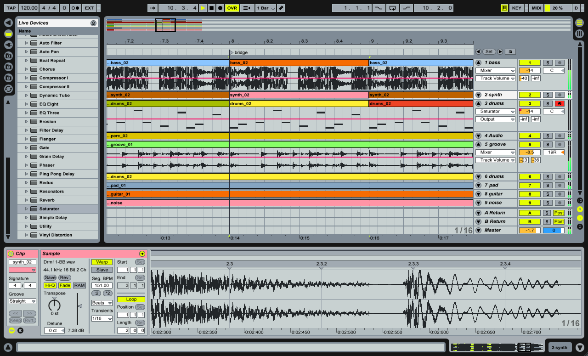
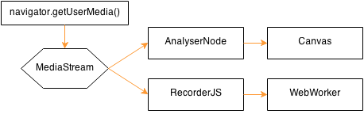

Building a collaborative audio editor based on the Web Audio API
Scotland.js 2014
Me: Jan Monschke
Frontend Developer from Berlin
Not really a musical background but
passionate about music
Audio on the Web
bgsoundobject, embed< audio />Audio Data APIWeb Audio API
Web Audio API
- low-level access to all things audio
- create sounds
- manipulate sounds (filters)
- timing sounds precisely
- tons of other cool stuff (spatial audio, audio analysis)
Analyzing audio editors
- years of development and best practices
- common interface patterns
- minimum feature sets
Garageband

Ableton Live
Reason
Analyzing audio editors
- timeline (left to right)
- previews, depending on content
- tracks as rows
- recording, importing, drums, synth
Web Audio Editor
 Demo
Demo
Recording
- Record audio
- Get live audio feedback for adjustments
- Upload recordings to server
- Select parts of audio
- Import audio files
Recording Node Graph
Drums
- Full control over speed and sounds
- Complex and varying drum loops
- Different drum sets
- Exact (!!!) timing
Web Audio Timing
- No
setTimeout/setInterval - Imagine a Joey Jordison based on JS-timing...oh my...
- Own timing system in Web Audio API
var node = context.createBufferSource();
node.start(when, offset, duration);
Synthesizer

Oscillators

Oscillators
Synthesizer Node Graph
 Synth Demo
Synth Demo
Collaboration
- First though: simple, lock all the things!
- Hinders creative process
- Frustrating
- Inconsistency problems
Operational Transformation
Operational Transformation
- De-facto standard (Google Drive, SubEthaEdit...)
- Lots of research
- ShareJS <3
- uber-complicated, many edge-cases
Differential Synchronization

Differential Synchronization
- Much simpler* and solves many edge-cases
- Less features
- Works like a charm with Angular.JS (for me™)
- Almost no custom code in Controllers needed
Why collaboration?
- Remote band brainstorming
- Easier melody brainstorming
- Auto-save and auto-backup
- sadly not offline...
Wrapping it up
- TODO
THX so much for your attention!
Read my thesis to dive deeper into the topics